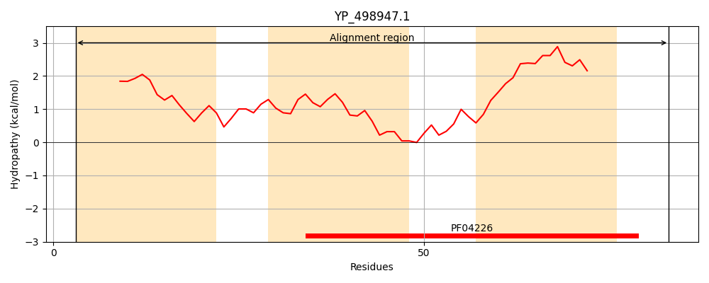
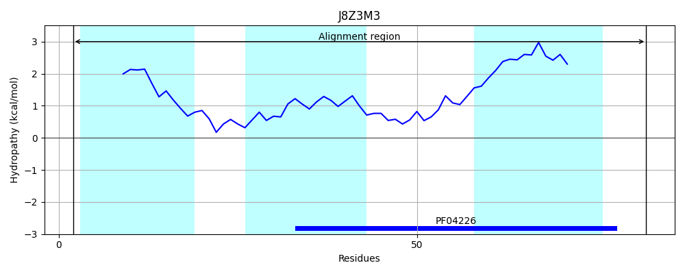
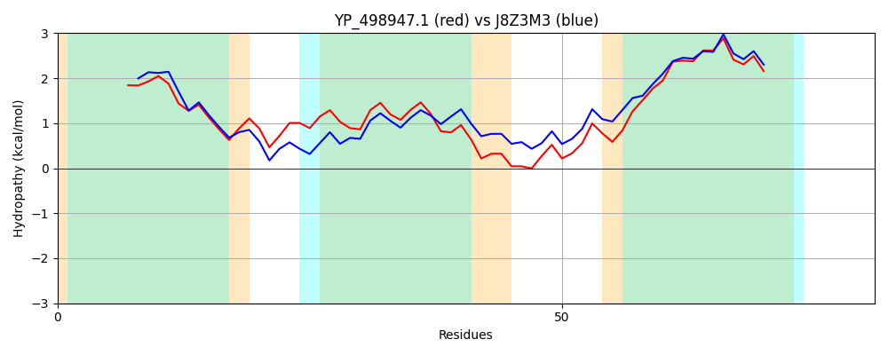

Hit Accession: J8Z3M3
Hit TCID: 1.E.43.1.9
Hit Description: gnl|BL_ORD_ID|5495 gnl|TC-DB|J8Z3M3|1.E.43.1.9 Uncharacterized protein OS=Bacillus cereus HD73 PE=4 SV=1
Mach Len: 81
e:0.000000
Query TMS Count : 3
Hit TMS Count: 3
TMS-Overlap Score: 2.550000
Predicted Substrates:None
BLAST Alignment:
| Protein Hydropathy Plots: | |
|---|---|
|  |  |
Pairwise Alignment-Hydropathy Plot: | |
|  | |